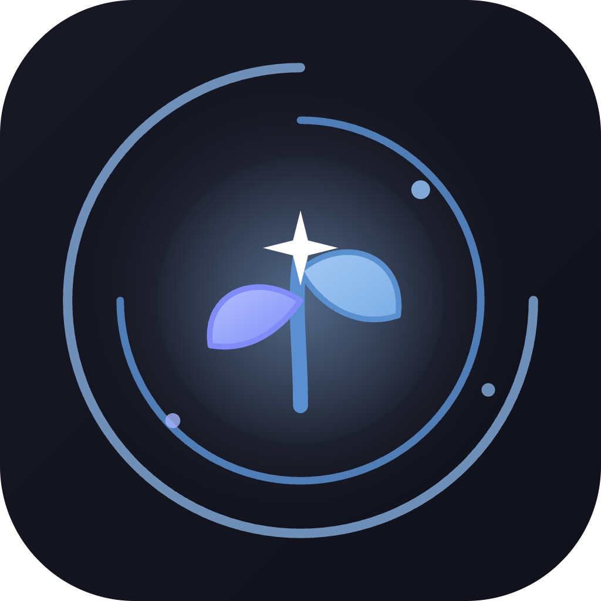
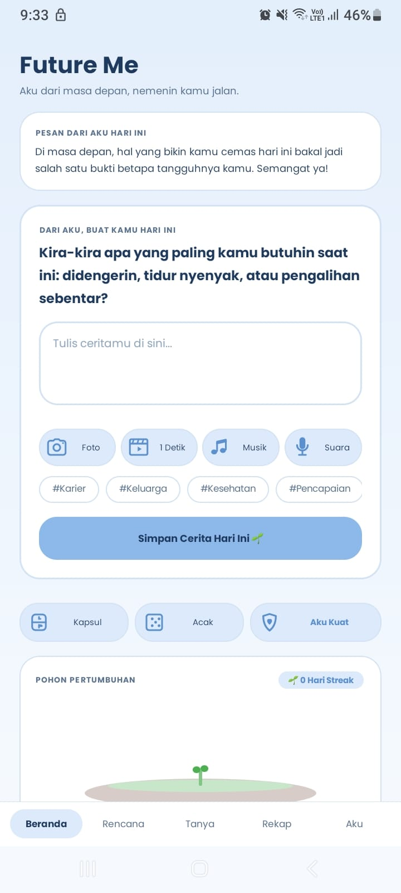

FutureMe adalah jurnal refleksi interaktif yang menemanimu menulis, bertanya, dan bertumbuh. Personal, privat, dan bebas tekanan.
Rencana
Target & To-Do
Tanya Masa Depan
Sudut pandang bijak
Kapsul Waktu
Kunci pesan nanti
Pohon Pertumbuhan
Makin lebat bertumbuh

Ketik atau bicara, ceritamu tertulis otomatis.
Semua data tersimpan lokal, tanpa server.
100% gratis & offline-first
Lebih tenang. Lebih jelas.
Bukan sekadar buku harian pasif. FutureMe memadukan refleksi terpandu, fleksibilitas multimedia, dan privasi penuh di ponselmu.
Membangun komunikasi dua arah yang hangat dengan proyeksi dirimu di masa depan. Si Futures hadir dengan empati, bukan jawaban robotik kaku.
AI menyusun pertanyaan harian berdasarkan data diri, gaya kepribadian yang kamu pilih, dan rangkuman 3 cerita terakhirmu (bukan template kaku).
Wadah saat kamu bimbang atau overthinking untuk mendapatkan sudut pandang yang lebih tenang, bijak, dan menyejukkan.
Curahkan isi hatimu dengan cara ternyaman saat ini, kapan pun dan di mana pun.
Setiap hari punya rasa, nada, dan visual yang pantas dikenang kembali.
Langkah-langkah kecil kamu hari ini ditemani motivasi dari masa depan.
Mengunci pesan, foto, atau video untuk dibuka di masa depan dengan tanggal yang kamu tentukan.
🔒 Terkunci Hingga Tanggal Target
Tidak bisa dibuka lebih awal demi menjaga kejujuran dan esensi emosional saat membukanya nanti.
Melihat proses bertumbuh yang nyata lewat metafora visual dan analisis perkembangan suasana hati berkala.
Konsistensi menulis digambarkan lewat pohon visual yang makin lebat seiring hari, dari tunas mungil hingga rimbun.
Rangkuman perkembangan pola pikir, suasana hati, serta tantangan hidup yang berhasil kamu lalui dengan tangguh.
Mengingatkanmu secara lembut tanpa merasa diteror notifikasi.
Sesuaikan mood menulis dan kenyamanan matamu kapan saja lewat menu Pengaturan.
Biru Pastel
Tenang & Damai
Pink Pastel
Hangat & Manis
Tema Gelap
Ramah Mata Malam
Intip antarmuka bersih dan tenang berbalut nuansa biru pastel yang dirancang agar pikiranmu tetap jernih.
Sapaan hangat dari versi masa depanmu, pohon pertumbuhan yang terus bersemi, dan kartu input cerita harian cepat.
Tiga langkah sederhana untuk memulai persahabatan hangat dengan dirimu di masa depan.
Tuliskan nama panggilanmu, apa impian setahun ke depan, dan pilih kepribadian si Futures: apakah santai (gue-lu), teman akrab, atau tenang adem.
Jawab pertanyaan harian atau curahkan isi hati. Gunakan ketikan, dikte bicara otomatis, voice note, foto kenangan, atau lagu yang sedang kamu putar.
Saksikan tunas kecilmu berubah menjadi pohon yang rimbun. Nikmati rekap 30 hari, montase video 1 detik, serta kartu infografis estetik untuk dieksplorasi.
“Seluruh data jurnal dan media tersimpan secara lokal di perangkat demi menjaga privasi penuh.”
Semua teks dan rekaman tersimpan langsung di memori ponselmu sendiri secara offline. Tanpa server pihak ketiga.
AI terhubung langsung ke Google Gemini dengan kunci milikmu sendiri, gratis selamanya tanpa biaya langganan.
Aplikasi tetap bisa digunakan secara normal meski dalam mode pesawat atau saat tidak ada sinyal internet.
Temukan jawaban seputar keamanan privasi data, penggunaan API Google Gemini, dan fitur-fitur unik FutureMe.
Aplikasi ini 100% aman dan seluruh data disimpan secara offline di ponselmu sendiri. Google Play Protect mendeteksi peringatan tersebut semata-mata karena FutureMe memiliki fitur pendeteksi musik (fitur Soundtrack Hidup) yang membaca judul lagu yang sedang berputar di Spotify atau YouTube Music saat menulis jurnal. Izin tersebut murni hanya membaca lagu saja, dan itu pun baru aktif jika diberikan izin oleh pengguna.
🛠️ Cara mengatasi jika Google Play Protect memblokir saat instalasi APK:
Ambil jeda sejenak hari ini. Curahkan ceritamu, pantau pertumbuhan tunasmu, dan rasakan kehadiran versi terbaik dirimu.
Untuk Kerjasama bisa hubungi email: prmpify@gmail.com
Punya saran dan masukan? Forward ke email: prmpify@gmail.com
Android APK • v1.0.0 • 10.8 MB • 100% Gratis
🔥 Sudah terdownload: 0 kali
Panduan Instalasi Cepat:
🛡️ Catatan Google Play Protect:
Jika Play Protect memunculkan peringatan, pilih "Tetap Instal" atau jeda pemindaian sementara di Play Store. Aplikasi ini 100% aman & hanya membaca musik saat izin diberikan (detail lengkap ada di FAQ).
🔒 Bebas malware, tanpa server pihak ketiga, 100% offline-first.